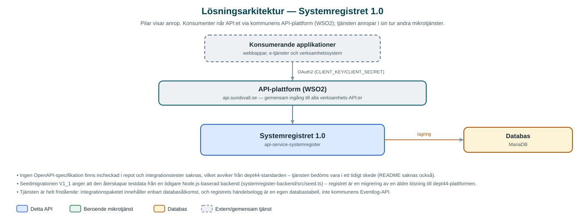

Systemregistret
Register över kommunens IT-system med leverantörer, kritikalitet, informationsklassning, personuppgiftsbehandlingar och sårbarhetsuppföljning – ett stöd för IT-styrning och informationsförvaltning.
Om API:et
Systemregistret samlar kommunens kunskap om de IT-system som används i verksamheten. Varje system registreras med status, ansvarig organisation, leverantör, kritikalitetsnivå och beroenden till andra system, och kan kopplas till de tjänster systemet levererar.
Registret rymmer även informationsförvaltningens perspektiv: informationsklassning, informationshanteringsplaner, handlingstyper med ansvariga, föreskrifter samt klassificeringsstrukturen KLASSA med verksamhetsområden, verksamhetstyper, processgrupper och processer. Personuppgiftsbehandlingar registreras och länkas till de system där behandlingen sker, vilket stödjer kommunens GDPR-arbete.
Därutöver hanteras sårbarhetsskanningar med fynd per system, ett register över AI-applikationer samt organisationsträd, personer och kodlistor. Ändringar spåras i registrets egen händelselogg. Systemsökningen stödjer fritext, statusfilter och paginering.
Det här gör API:et
- Systeminventarie – IT-system registreras med status, organisation, leverantör, kritikalitetsnivå, systemberoenden och kopplade tjänster; sökning med fritext och statusfilter.
- Informationsförvaltning – Informationsklassning, informationshanteringsplaner, handlingstyper med ansvariga, föreskrifter och KLASSA-strukturen (verksamhetsområden, verksamhetstyper, processgrupper, processer).
- Personuppgiftsbehandlingar – GDPR-behandlingar registreras och länkas till de system där behandlingen sker.
- Sårbarhetsuppföljning – Sårbarhetsskanningar och fynd registreras och följs upp per system.
- AI-applikationer – Eget register över kommunens AI-applikationer.
- Händelselogg – Ändringar i registret spåras i en egen händelselogg.
API-dokumentation
Ingen incheckad OpenAPI-specifikation hittades i källkodsförrådet; se källkoden för aktuell API-dokumentation.
Teknisk dokumentation
Nedan beskrivs hur tjänsten är uppbyggd, vilka andra tjänster den anropar och vad som krävs för att driftsätta den. Informationen är härledd ur källkoden och dess konfiguration på GitHub.
Arkitektur

API:et är en mikrotjänst (Java 25, Spring Boot via kommunens gemensamma tjänsteplattform dept44 (8.0.8), byggd med Maven). Konsumenter når tjänsten via kommunens gemensamma API-plattform (WSO2) på api.sundsvall.se – tjänsten anropas aldrig direkt. Lagring: MariaDB med Flyway-migrationer; hela registret lagras lokalt, med incheckad dev/test-seeddata i migrationen V1_1.
Teknikstack
- Språk: Java 25
- Ramverk: Spring Boot via kommunens gemensamma tjänsteplattform dept44 (8.0.8), byggd med Maven
- Databas: MariaDB med Flyway-migrationer; hela registret lagras lokalt, med incheckad dev/test-seeddata i migrationen V1_1
- Övrigt: JPA/Hibernate med dynamiska specifikationer för systemsökningen; inga integrationer mot andra tjänster
Beroenden till andra mikrotjänster
Inga anrop till andra mikrotjänster hittades i källkodens konfiguration.
Konfiguration och driftsättning
- MariaDB-anslutning via config.datasource (url, användarnamn, lösenord); databasschemat versionshanteras med Flyway
- Flyway är aktiverat som standard och kör även seedmigrationen med dev/test-data – produktionsmiljöer behöver hantera detta enligt kommentaren i migrationen
- Anrop görs per kommun – municipalityId ingår i alla API-vägar
Noterbart ur källkoden
- Ingen OpenAPI-specifikation finns incheckad i repot och integrationstester saknas, vilket avviker från dept44-standarden – tjänsten bedöms vara i ett tidigt skede (README saknas också).
- Seedmigrationen V1_1 anger att den återskapar testdata från en tidigare Node.js-baserad backend (systemregister-backend/src/seed.ts) – registret är en migrering av en äldre lösning till dept44-plattformen.
- Tjänsten är helt fristående: integrationspaketet innehåller enbart databasåtkomst, och registrets händelselogg är en egen databastabell, inte kommunens Eventlog-API.
- Systemsökningen bygger ett dynamiskt JPA-predikat av statusfilter och fritext och sorterar alltid på systemnamn – verifierat i SystemService.
Källkod
Källkoden är öppen och finns hos Sundsvalls kommun på GitHub. I källkodsförrådet finns även instruktioner för att klona, konfigurera och starta tjänsten i egen miljö.